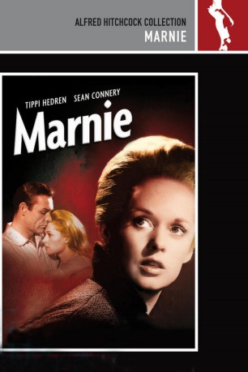

#1635 Hitchcock - Marnie
 
 IMDB-Wertung: 7.2 / 10
IMDB-Wertung: 7.2 / 10  Metascore: 0
Metascore: 0 
Marnie Edgar ist eine eiskalte Gewohnheitsdiebin. Sie nutzt ihr Aussehen, um das Vertrauen ihrer Brötchengeber zu gewinnen, sie anschließend auszurauben und dann eine neue Identität anzunehmen. Ihre einzige Liebe gehört den Pferden und ihrer Mutter, obwohl auch diese Beziehung problematisch ist. Als Marnie einen Job im Verlag von Mark Rutland annimmt, erkennt dieser sie wieder, da ihr ehemaliger Arbeitgeber ein Klient von ihm ist. Anstatt sie bloßzustellen, beschließt er, sie zu beobachten.
Jahr: 1964
Dauer: 130 Minuten
FSK: 16
Land: USA Studio: Universal PicturesTonspuren:
Untertitel: Deutsch,
Auflösung: 1080p (1920x1040) Größe: 10076 MB
Genre: Thriller, Drama
Regisseur:  Alfred Hitchcock
Alfred Hitchcock
Drehbuch: Winston Graham, Jay Presson Allen
Soundtrack: Bernard Herrmann
Darsteller:
- Tippi Hedren als Marnie Edgar
 Sean Connery als Mark Rutland
Sean Connery als Mark Rutland- Martin Gabel als Sidney Strutt
 Diane Baker als Lil Mainwaring
Diane Baker als Lil Mainwaring Alan Napier als Mr. Rutland
Alan Napier als Mr. Rutland Mariette Hartley als Susan Clabon
Mariette Hartley als Susan Clabon Bruce Dern als Sailor
Bruce Dern als Sailor Meg Wyllie als Mrs. Turpin
Meg Wyllie als Mrs. Turpin John Alvin als Hotel Chauffeur , uncredited
John Alvin als Hotel Chauffeur , uncredited Kimberly Beck als Jessica 'Jessie' Cotton , uncredited
Kimberly Beck als Jessica 'Jessie' Cotton , uncredited Harold Gould als Mr. Garrett - Manager of Farm , uncredited
Harold Gould als Mr. Garrett - Manager of Farm , uncredited- John Hart als Dr. Gilliat - Minister , uncredited
- Emmaline Henry als Minor Role , uncredited
 Alfred Hitchcock als Man Leaving Hotel Room , uncredited
Alfred Hitchcock als Man Leaving Hotel Room , uncredited- Carmen Phillips als Sidney Strutt's Secretary , uncredited
- Melody Thomas Scott als Young Marnie , uncredited
- Louise Latham als Bernice Edgar
- Bob Sweeney als Cousin Bob
- Milton Selzer als Man at Track
 Henry Beckman als First Detective
Henry Beckman als First Detective- Edith Evanson als Rita - Cleaning Woman
- S. John Launer als Sam Ward
 Leon Alton als Party Guest , uncredited
Leon Alton als Party Guest , uncredited- Lillian Bronson als Mrs. Maitland , uncredited
 George Bruggeman als Racetrack Patron , uncredited
George Bruggeman als Racetrack Patron , uncredited Linden Chiles als Office Worker , uncredited
Linden Chiles als Office Worker , uncredited- Rupert Crosse als Office Worker , uncredited
 Kenner G. Kemp als Party Guest , uncredited
Kenner G. Kemp als Party Guest , uncredited- Caryl Lincoln als Party Guest , uncredited
- Louise Lorimer als Mrs. Strutt , uncredited
- Milton Parsons als Bald Man , uncredited
- Murray Pollack als Husband , uncredited
 Bert Stevens als Party Guest , uncredited
Bert Stevens als Party Guest , uncredited- Hal Taggart als Racetrack Patron , uncredited
Datei: X:\Person\Hitchcock\Hitchcock - Marnie (1964, FSK16, 1920x1040).mkv seit 28.07.2015
Festplatte: HD Collection-7+mehr(A-Z)+Person
 Es gibt insgesamt 25 Filme in der Gruppe 'Person\Hitchcock'
Es gibt insgesamt 25 Filme in der Gruppe 'Person\Hitchcock'